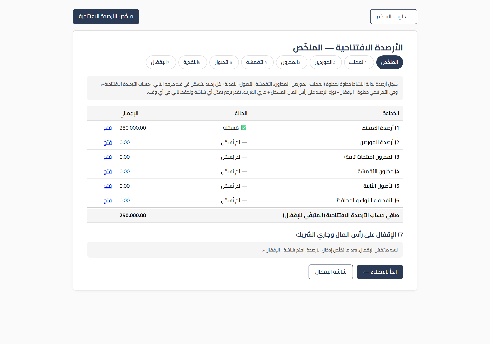
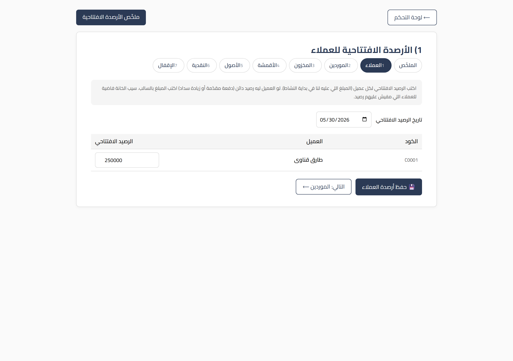
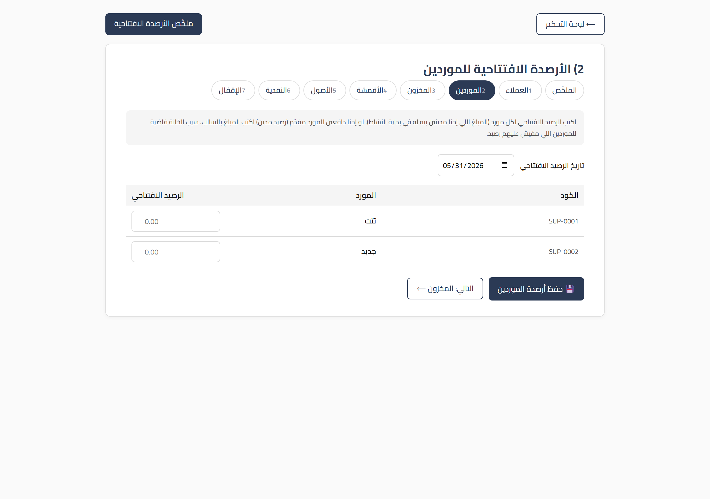
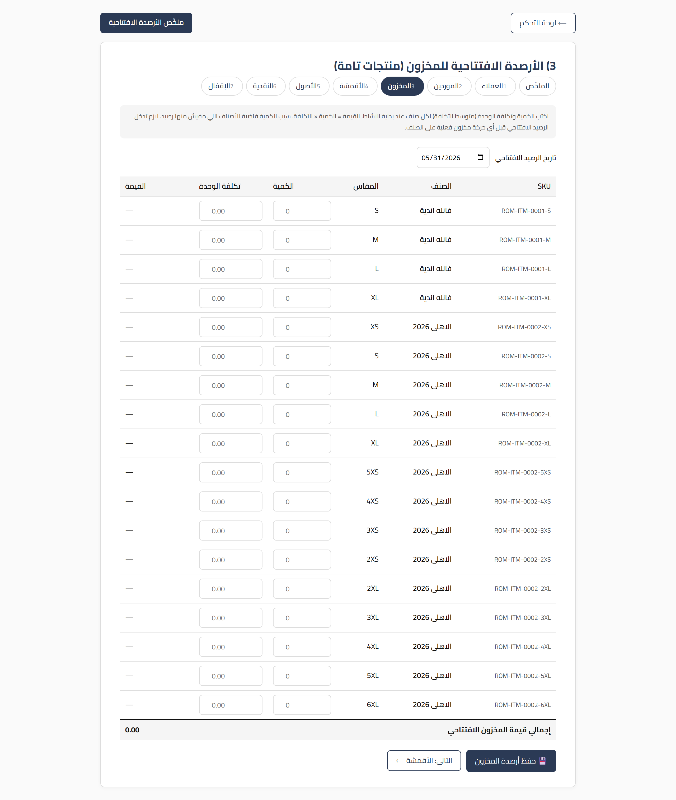
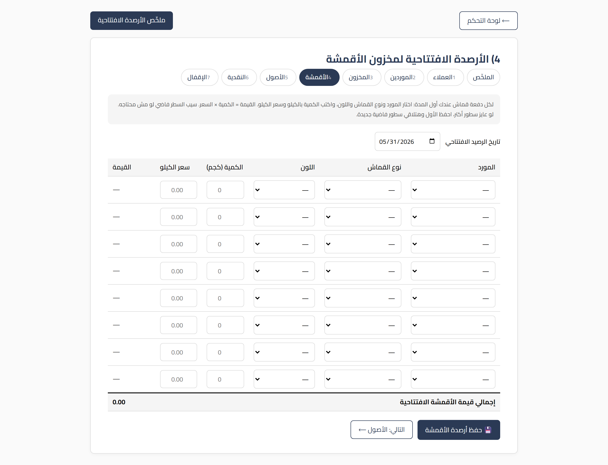
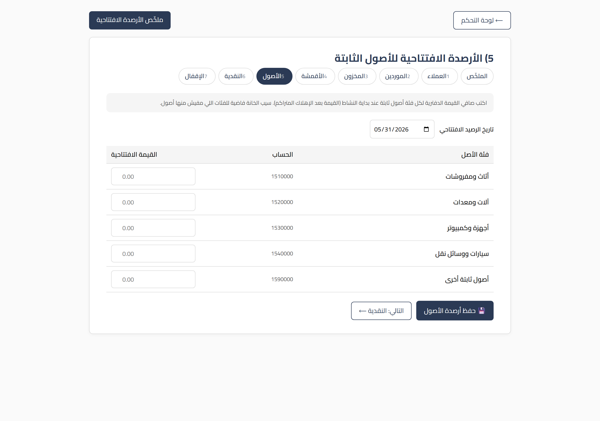
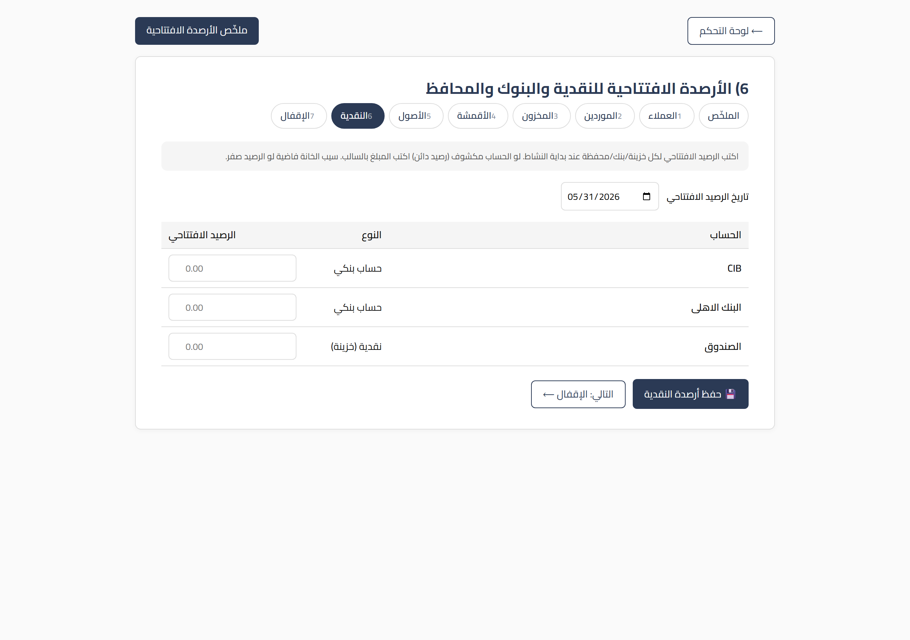
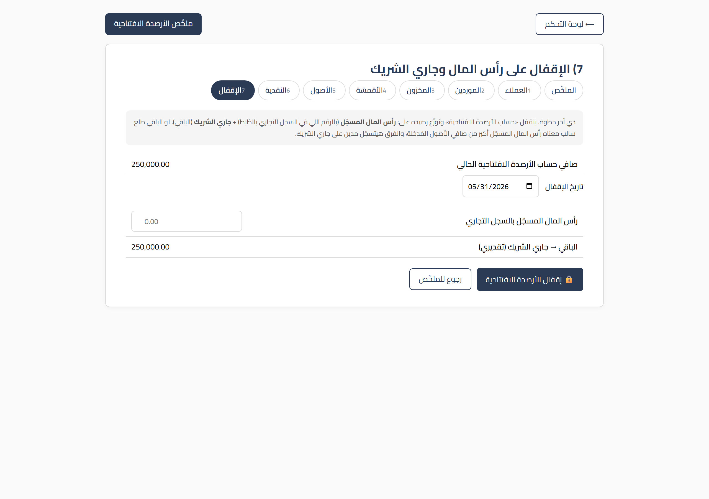

الدليل ده مخصوص لخطوة بتتعمل مرة واحدة بس في عمر الشركة على السيستم: إدخال الأرصدة الافتتاحية (يعني الأرقام اللي الشركة بادئة بيها يوم ما اشتغلت على البرنامج).
غالباً اللي بيعمل الخطوة دي هو المدير أو المحاسب، مش أي موظف عادي.
اقرا الجزء الأول كله بالراحة قبل ما تلمس أي شاشة، عشان تفهم انت بتعمل إيه أصلاً. بعد كده الخطوات بسيطة جداً.
تخيّل إن شركتك شغّالة من سنين بالورق والدفاتر، والنهاردة قررت تدخل كل حاجة على السيستم. السيستم لسه متولد دلوقتي، فهو مش عارف حاجة عن اللي فات: مش عارف مين العملاء اللي ليك عندهم فلوس، ولا المخزن اللي في الدكان، ولا الفلوس اللي في الدرج.
الأرصدة الافتتاحية = إنك تقول للسيستم: "اسمع، احنا مش بادئين من الصفر، ده وضع الشركة الحقيقي يوم ما بدأنا عليك". يعني بتصوّرله الشركة لحظة الانطلاق.
مثال يقرّب الصورة:
العميل أحمد كان واخد منك بضاعة بـ 5,000 جنيه ولسه ما دفعش، قبل ما تشتري السيستم خالص.
لما تدخل السيستم لأول مرة، لازم تقوله "أحمد عليه 5,000". ده رصيد افتتاحي.
لو ما عملتش كده، السيستم هيفتكر إن أحمد ما عليهوش حاجة، وهتنسى الـ 5,000 دول.
نفس الكلام على:
- العملاء اللي ليك عندهم فلوس.
- الموردين اللي انت عليك لهم فلوس.
- المخزن: البضاعة والقماش اللي موجودين فعلاً عندك.
- الأصول الثابتة: العربيات، الماكينات، الأثاث، الكمبيوترات.
- النقدية والبنوك: الفلوس اللي في الخزنة وفي حساباتك بالبنك.
في المحاسبة فيه قاعدة حديدية: أي رصيد بتدخّله لازم يبقى ليه طرف تاني يوازنه. مينفعش تقول "عندي بضاعة بـ 80 ألف" من غير ما تقول "البضاعة دي جت منين".
عشان نسهّلها عليك، السيستم بيستخدم حساب وسيط اسمه «حساب الأرصدة الافتتاحية». كل رصيد بتدخّله بيروح طرف منه على الحساب الحقيقي (العميل، المخزن، النقدية...) والطرف التاني بيتجمّع في الحساب الوسيط ده مؤقتاً.
في آخر خطوة (الإقفال) السيستم بيفرّغ الحساب الوسيط ده ويوزّعه على حاجتين:
مش لازم تفهم المحاسبة عشان تعمل ده. السيستم بيحسب كل ده لوحده. انت بس بتدخّل الأرقام الحقيقية، وبتكتب رأس المال المسجّل في آخر خطوة، والباقي عليه.
ملاحظة عن المستخدم: كل القيود الافتتاحية بتتسجّل باسم مستخدم مخصوص اسمه «الأرصدة الافتتاحية». ده مش مستخدم بيدخل بيه حد — هو بس عشان تبان القيود دي واضحة ومتميّزة عن الشغل اليومي. متقلقش منه.
عشان الأرصدة الافتتاحية تطلع صح، فيه ترتيب لازم تمشي عليه:
جهّز "الكتالوجات" الأول. الشاشات دي بتضيف رصيد لسجل موجود، مش بتنشئ سجلات جديدة. يعني:
- لازم تكون مسجّل العملاء قبل ما تدخّل أرصدتهم.
- لازم تكون مسجّل الموردين والأصناف/الـ SKUs والخزائن والبنوك الأول.
- لو لقيت شاشة فاضية، ده معناه إنك لسه ما سجّلتش السجلات دي — ارجع سجّلها من شاشاتها العادية وبعدين تعالى هنا.
دخّل الأرصدة الافتتاحية قبل أي معاملة حقيقية. يعني قبل ما تعمل أول فاتورة بيع أو أول شراء على السيستم. الأرصدة الافتتاحية بتمثّل لحظة الصفر، فلازم تتسجّل قبل أي حركة.
الإقفال آخر حاجة. بعد ما تخلّص كل الأرصدة (عملاء، موردين، مخزون، قماش، أصول، نقدية)، ساعتها بس روح خطوة الإقفال واكتب رأس المال.
القاعدة: كتالوجات ← أرصدة افتتاحية ← إقفال ← وبعد كده الشغل اليومي العادي.
فيه طريقتين:
http://localhost:8001/opening/ وهتلاقي شاشة الملخّص اللي منها بتنط لأي خطوة.أول ما تفتح /opening/ هتلاقي شاشة الملخّص. دي بتوريك:
ابدأ من فوق لتحت بالترتيب. كل ما تخلّص خطوة، ارجع للملخّص أو استخدم زر "التالي" اللي تحت كل شاشة.

في كل شاشة: اكتب الأرقام في الخانات، اتأكد من التاريخ فوق، وبعدين دوس زر الحفظ تحت. من غير حفظ مفيش حاجة بتتسجّل.
الغرض: تقول للسيستم كل عميل عليه/ليه كام لحظة البداية.
مثال: أحمد عليه 5,000 ⟵ اكتب
5000. سمير دافع مقدّم 1,200 ⟵ اكتب1200-.

الغرض: تقول للسيستم انت عليك كام لكل مورد لحظة البداية.
لاحظ إن إشارة الموردين معكوسة عن العملاء: عند العميل الموجب معناه "ليك"، وعند المورد الموجب معناه "عليك".

الغرض: تقول للسيستم كل صنف عندك منه كام قطعة وبكام تكلفة القطعة.
مهم: لو الصنف عليه حركات حقيقية بالفعل (اتباع أو اتحرّك على السيستم)، الشاشة هترفض تسجّل له رصيد افتتاحي — عشان كده الأرصدة الافتتاحية لازم تتدخّل قبل أي معاملة.

الغرض: تسجّل أرصدة القماش الموجودة في المخزن لحظة البداية، كل "لفّة/دفعة" على حدة.
لكل سطر قماش لازم تكتب:
- المورد اللي جه منه القماش (تختاره من ليستة).
- نوع القماش واللون.
- الكمية بالكيلو.
- سعر الكيلو (التكلفة).
تقدر تزوّد سطور حسب عدد أنواع/ألوان القماش اللي عندك. السيستم بيعمل لكل سطر دفعة قماش في المخزن.

الغرض: تسجّل قيمة الحاجات الكبيرة اللي بتفضل مع الشركة (عربيات، ماكينات، أثاث، كمبيوترات...).
مثال مهم:
ماكينة اشتريتها بـ 100,000 وعدّى عليها زمن واتهلكت بـ 30,000.
القيمة اللي تكتبها هنا =70000(مش 100,000).

الغرض: تسجّل الفلوس اللي عندك فعلاً لحظة البداية، في كل خزنة/بنك/محفظة.

بعد ما تخلّص كل الأرصدة اللي فوق، تيجي الخطوة الأخيرة: الإقفال على رأس المال وجاري الشريك.
الخطوات:
1. افتح شاشة الإقفال (من الملخّص أو كارت "الإقفال").
2. هتلاقي فوق «صافي حساب الأرصدة الافتتاحية الحالي» — ده مجموع كل اللي دخلته (صافي الأصول).
3. اكتب في خانة «رأس المال المسجّل بالسجل التجاري» الرقم الرسمي اللي أسّست بيه الشركة.
4. السيستم هيوريك تحتها على طول «الباقي → جاري الشريك (تقديري)».
5. راجع، وبعدين دوس زر 🔒 إقفال الأرصدة الافتتاحية.
لو الباقي طلع بالسالب: معناه إن رأس المال المسجّل أكبر من صافي أصول الشركة الحقيقي، والفرق هيتسجّل مدين على جاري الشريك (يعني الشريك عليه للشركة). ده عادي محاسبياً، بس اتأكد إن الأرقام صح.

خلّينا نتخيّل شركة دخلت الأرصدة دي:
| البند | القيمة |
|---|---|
| أرصدة العملاء (ليك عندهم) | 50,000 |
| أرصدة الموردين (عليك لهم) | (20,000) |
| المخزون | 80,000 |
| النقدية والبنوك | 30,000 |
| الأصول الثابتة | 100,000 |
| صافي حساب الأرصدة الافتتاحية | 240,000 |
دلوقتي في الإقفال:
- رأس المال المسجّل بالسجل التجاري = 100,000.
- الباقي = 240,000 − 100,000 = 140,000 ⟵ بيروح جاري الشريك.
يعني الشركة بدأت برأس مال 100,000، وبصافي أصول 240,000، والفرق (140,000) محسوب على إنه مستحق للشريك (كإنه ضخّ في الشركة أكتر من رأس المال المسجّل).
س: دخلت رقم غلط وحفظت، أعمل إيه؟
ج: عادي خالص. ارجع لنفس الشاشة، صلّح الرقم، واحفظ تاني. السيستم بيمسح القديم ويكتب الجديد لوحده.
س: لقيت شاشة فاضية (مفيش عملاء/أصناف)؟
ج: معناه إنك لسه ما سجّلتش السجلات دي من شاشاتها العادية. سجّلها الأول وبعدين تعالى دخّل أرصدتها.
س: أعملها كام مرة؟
ج: مرة واحدة بس وقت ما تبدأ الشركة على السيستم. مش حاجة يومية.
س: نسيت أدخل رصيد عميل ولقيته بعد ما عملت الإقفال؟
ج: ضيف الرصيد من شاشة العملاء، وبعدين اعمل الإقفال تاني عشان السيستم يعيد التوزيع صح.
س: أكتب التكلفة ولا سعر البيع في المخزون؟
ج: التكلفة دايماً (سعر الشراء/التصنيع). المخزون بيتقيّم بالتكلفة مش بسعر البيع.
س: الباقي في الإقفال طلع بالسالب، فيه غلط؟
ج: مش بالضرورة. معناه رأس المال المسجّل أكبر من صافي الأصول. بس راجع أرقامك للتأكيد.
/opening/ أو قسم الأرصدة الافتتاحية في لوحة التحكم.افتكر: كله قابل للتعديل، وأي شاشة فاضية معناها سجلات ناقصة. خد وقتك، وراجع قبل الإقفال.